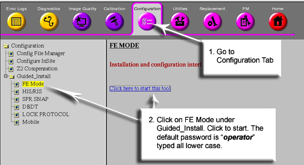
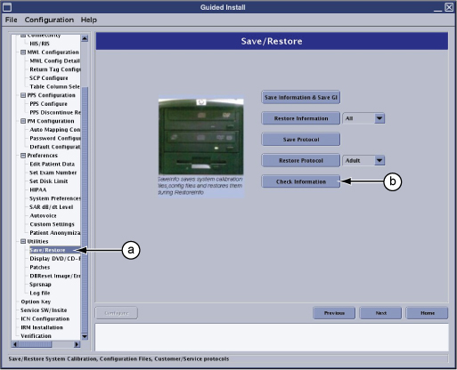
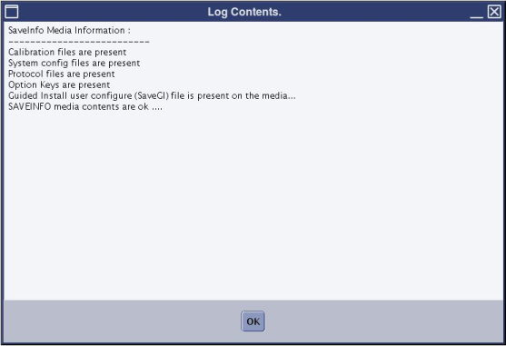

Verify SaveInfo Data is used to verify content of SaveInfo media
to the original data on the system disk drive. The program firsts
checks that all files are present on the SaveInfo media and then if
check sums match.
Procedure
Insert your already created SaveInfo DVD into the appropriate
drive if it's not already there.
At the host computer, go to the Service Desktop and open the
Service Browser if it's not already running and start the Guided Install
tool in FE Mode. See the illustration below.
Figure 1. Starting Guided Install From The Service Browser

In Guided Install, perform the following steps.
Go to the Save / Restore screen.
Start the verification process by selecting [Check Information]
button.
Figure 2. Starting SaveInfo Verification

The tool will verify the data on the media with that on the
system hard drive. If no media is present, the you see an error message.
While the media is being checked, the popup shown in the following
alert box displays. The process takes about two minutes.
Figure 3. Verification Wait Screen.
Once verification is complete, the system will ask if you want
to view the log. See . Click Yes .
Figure 4.
The Log Contents alert box, similar to the illustration below,
displays a list of the located content. If any errors are reported,
create a new SaveInfo.
Figure 5. SaveInfo Verification Log

Finalization
Store Save/Restore media in a safe place.
Do a test scan before customer turnover to ensure proper operation.